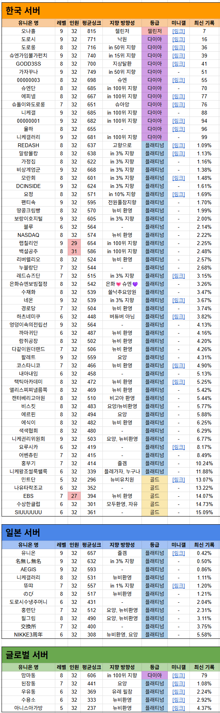

갤길이란?
니케 마이너 갤러리에서만 구인하여 조직된 유니온
+ 카톡 디코등 외부소통수단을 사용하지않음
갤길 구인 꿀팁
https://gall.dcinside.com/mgallery/board/view/?id=gov&no=4866629
매일 오전 6시 리스트가 자동 갱신됨
리스트에서 인원을 표기하지만 실제 구직은 유니온 탭의 구인글을 확인 바람
본 리스트는 니마갤 협전사이트 "렛츠도로"와 연동됨
아래 링크에서 갤길 리스트 확인 가능
모바일은 "구글 스프레드시트" 앱을 별도로 다운해야함
https://docs.google.com/spreadsheets/d/1TJAD4iHIS4kqEmfwghR9jvXF4UvSq_0ElbtmO7W2rVo/edit?usp=sharing
